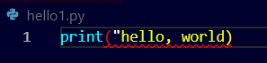

Here is one basic example:
The problem in the code is simply the doble inverted commas that aren't closed and watch the error in the terminal


It show a SyntaxError
Now, SyntaxErrors are errors that are all that you have to fix but there are lot of other errors in python known as RunTimeErrors
Here is another common type of error :
Literal means something that is typed in.


- Consider you have written a program for getting an integer value input from the user and then print it.
- But here you cannot directly convert the input taken from the user to integer as in exceptional case a user might not enter an integer,
- For example see the above piece of code and the error
- As said the user here instead of an integer types "cat" in the input which we have already converted to integer, so in these types of cases the python give a simple ValueError and it states this in a difficult i.e., not easy to understand way.
What's the catch here how can we handle this we need error handling for this.
Watch how...


Now this method can only handle the named error in it for example the ValueError if there is any other type of error detected the above code cannot handleit.
So we need to improve it, we will see that further for here just see what can go wrong with a simple modification in code.
Here in the above code we do not need the print statement in the try part, so we move it at the end of our code as follows:


Wondering what can go wrong see this!! shocked?
The program says NameError: x is not defined
Here it is order of operations , i.e., in what order the program is executed.
Here the NameError refers to the code you have written, it says that x is not defined it means the ValueError that we have catched is happening before it is catched.
So there is another keyword in python to handle such scenarios which is "else"
See how...


So here it works like:
- Step-1 : Try the first block, check the input value with that of the except case, if nothing goes wrong print the statement{execute the} in else block.
- Step-2 : If the user enters a string or anything other than an integer execute the except block.
Now let's make the execution of this program more use friendly by making it ask repeaedly for value of x untill the user finally enters an integer.
How can we do it?
Yes, correct by using loop.
We here use the whileTrue infinite loop as we do not know the exact number of times the program is going to be executed.
Watch how it is done...


Now we can create a function for this watch


In python while handling errors sometimes if you just don't want to do anything after catching the error then you have a choice of just passing it .
You can use the pass keyword.
Watch how...
It simply passes the block in which we have written it. For example here in the below code it skips the except block and executes the try block again if ay ValueError occurs


 This is another way of writing the same code.
This is another way of writing the same code.